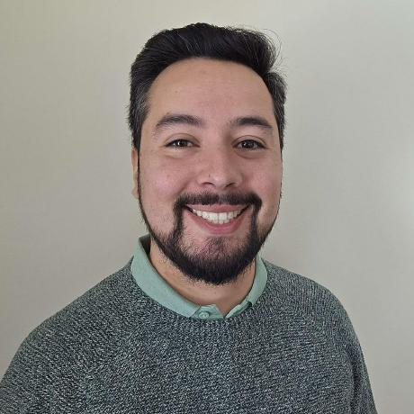
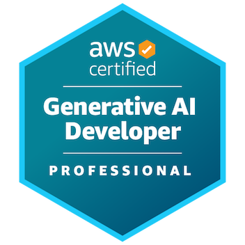
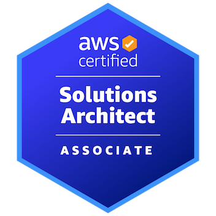

Hi, I'm Roberto! I'm an Electronic Engineer with 10 years of experience across software development and DevOps, with a strong background in electronics, embedded systems, and low-level system analysis. Specialized in designing and implementing hybrid cloud solutions on AWS, integrating IoT devices and embedded test infrastructure with secure, scalable backends.
robert.riquelme.saez@gmail.com
+56 9 8200 6928
Santiago, Chile

▪ Certification issued by Amazon Web Services Training and Certification.
▪ Work as part of a cloud engineering team maintaining and improving shared platforms and services, collaborating through Jira-managed Kanban/Scrum workflows.
▪ Design, implement, and operate scalable serverless solutions for content delivery, using AWS Step Functions, Lambda, RDS, and Python services in production environments.
▪ Designed and deployed AWS solutions (EC2, S3, CloudFormation, Lambda, IoT) to securely connect IoT devices and embedded systems to cloud services.
▪ Built Python UIs and FastAPI services for clusters of hardware test jigs; automated orchestration with Ansible.
▪ Created product validation and functional test suites using Robot Framework and Python to improve release quality.
▪ Designed PCBs and IoT monitoring systems for embedded products.
▪ Certification obtained on Feb 29.

▪ Certification issued by Amazon Web Services Training and Certification.
▪ Set up CI/CD pipelines in GitLab and built Python tooling to automate test execution and data processing workflows.
▪ Designed and built custom test equipment (hardware and software), including PCB designs in Altium, with version control managed through Git and SVN.
▪ Built ML models in Python to estimate real vs. theoretical hydroelectric plant efficiency.
▪ Designed data pipelines for extraction, processing, and reporting to Power BI.
Topics: Recommendation Systems, Deep Learning, Machine Learning, Data Analysis & Visualization.
▪ Developed the Quantum Interconnect Explorer (QIE) in Python/Cython with TDD (pytest) and Bitbucket.
▪ Contributed to a team recognized at Taiwan InnoTech Expo (TIE) 2022; first Chilean company to sign with TSMC.
▪ Automated testing, data extraction/analysis, and reporting; integrated Jira APIs to track issues and projects.
▪ Developed Python/TCL/CSH automation for CI/CD and cloud workflows using Git and Perforce.
▪ Quality Assurance for Fusion Compiler; supported a tool used in 500+ tape-outs from 40 nm to 3 nm (ARM, AMD, Samsung, Renesas).
▪ Built an Android app in Kotlin with Firebase backend for a community emergency prototype ("Impacta Seguridad").
▪ Awarded USD 10,000 to build and validate the prototype with local communities.
▪ Circuit and PCB design in Eagle for sensor nodes; Python/MATLAB analytics of infrastructure data.
▪ C++/Python development for real-time data transfer from MEMS nodes into SQL backends.
▪ Automated ML data pipelines for predictive analyses on infrastructure.
▪ Analyzed P&IDs to specify and configure new equipment; assisted in substation upgrades with GE devices.
Key courses: Automatic Control, Process Control, Advanced Digital Systems, Multivariable Control, Industrial Networks.